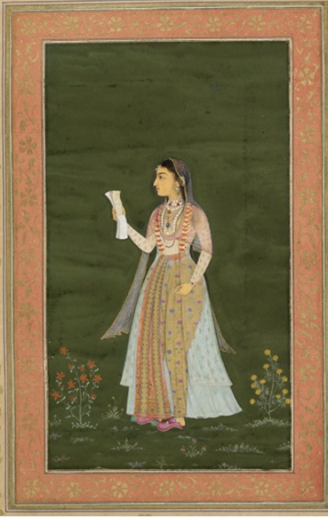
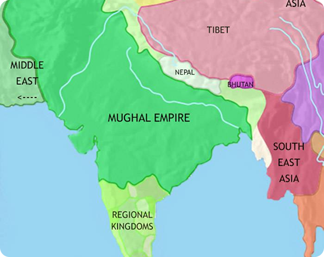
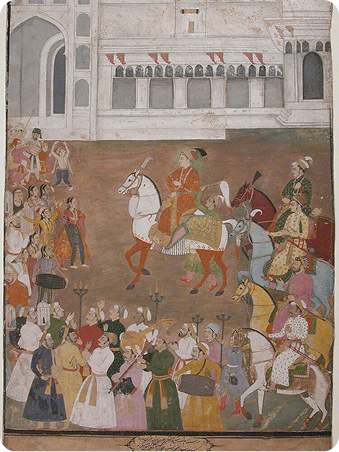
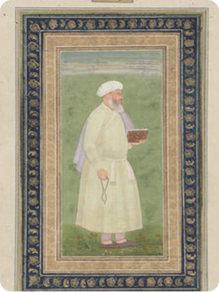
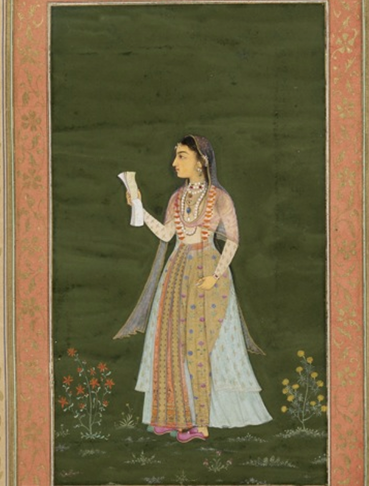
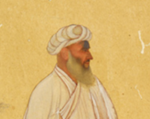
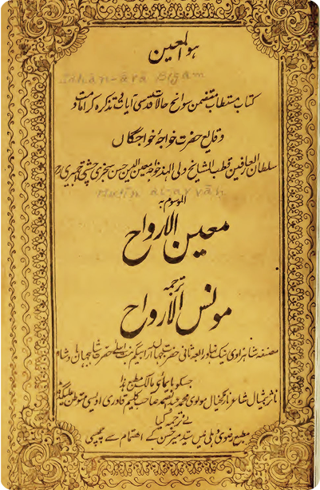
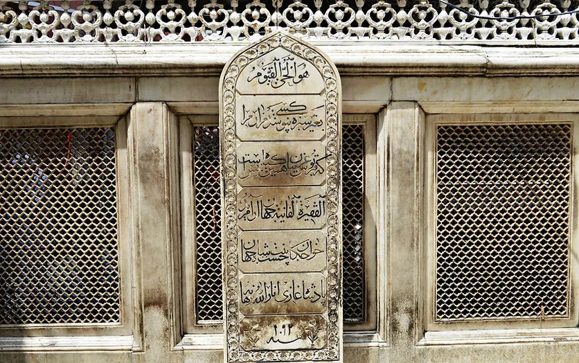

Jahanara Begum:
The Faqirah Princess
A Mughal Princess' Dual Utilizaton of Sufism
Shaunika Buttan
Intro to Islam, Spring 2026

Introduction
Jahanara Begum was a Mughal Dynasty princess during the peak of the Mughal empire. Born to Shah Jahan and Mamtaz Mahal in 1614, Jahanara's world was one of immense luxury and prowess. Her father ordered the building of the grand Taj Mahal in honor of her mother in 1632. Further, when Jahanara's brother Aurangzeb claimed the throne in 1658, he utilized unrelenting military campaigns to expand the Mughal empire and cover the lengths of the Indian subcontinent.
When Mamtaz Mahal passed away, the emperor, Shah Jahan, appointed Jahanara to the role of Padshah Begum (First Lady) of the empire. At only 17, the princess gained control of the imperial harem and the imperial seal, giving her substantial power. She handled the empire's political, social, and economic transactions.
Despite her royal status, Jahanara remained a practicing Sufi Muslim for the entirety of her life. Dara Shikoh, her eldest brother, introduced the princess to Mullah Shah, a Sufi ascetic, when she was 20. Both siblings were disciples of Mullah Shah and produced writings, commisioned artwork, and designed buildings in honor of him. In contrast, their younger brother Aurangzeb was a Sunni Muslim who didn't believe in the mystical teachings of Sufism. This religious disagreement exacerbated the pre-existing tensions between the siblings over the throne.
We will explore how Jahanara's devout Sufi beliefs allowed her comfort in the gilded cage of the Mughal Empire, while also giving her and her favored family members divine sanction for their royal status.
Life as a Mughal Princess

A map of Mughal India, 1648
https://timemaps.com/history/south-asia-1648ad/
Mughal princesses were:
- not allowed to marry to preserve the political secrecy of the empire
- kept under strict "pardah" rules; princesses would talk to outsiders from behind a curtain
- expected to promote the empire's pious image by donating food, visiting saintly tombs, and commissioning buildings
- allowed to write, but only about the men in their life, ex. the emperor
As seen below, the pardah rule for Mughal princesses was strictly adhered to. There are many paintings of Dara Shikoh and Mullah Shah made during Jahanara’s lifespan, yet there is only one identified painting of Jahanara. Despite Jahanara’s high status as the Padshah Begum, she was kept tucked away by the standards of her time.

One Dara Shikoh painting out of many
As the heir apparent, Dara Shikoh commisioned many paintings of himself to assert his authority.
Although Dara Shikoh and Jahanara worked closely in the political sphere, Dara Shikoh was the more visible prescence.

Mullah Shah, the Sufi ascetic
Dara Shikoh and Jahanara both commissioned many paintings of Mullah Shah as a way to worship the divine (see the Mullah Shah section).
Despite Jahanara's elevated royal status, she still has far less paintings than Mullah Shah.

Jahanara by Lalchand
This Mughal painting by Lalchand dated to 1631 depicts Jahanara. This painting was present in a series of paintings that Dara Shikoh gifted to his wife.
Notably, Lalchand did not paint this based on the looks of Jahanara. Instead, he based it off of a standard Mughal teenage girl, since pardah rules restricted him from seeing the princess.
Although Jahanara was unable to marry or appear unrestricted in the public eye, she utilized her role of Padshah Begum to the fullest. The princess upheld the devout image of the empire by providing safe passage to Muslim pilgrims on Mughal vessels. Jahanara also participated in politics and would be the first point of contact for foreign representatives, establishing her name in the empire.
Tumultuous Family Dynamic: Dara Shikoh and Aurangzeb
Dara Shikoh and Jahanara were closely-knit and shared the same Sufi beliefs. Dara introduced Jahanara to Mullah Shah, a Qadiri Sufi ascetic, when she was 20, and both siblings devoted works of art and buildings to Shah.
Dara Shikoh was in line to inherit the tile of emperor from his father, Shah Jahan. However, the younger brother, Aurangzeb, also had his eyes on the throne. After many years of fighting and bitter struggle, Aurangzeb ordered Dara to be executed for Islamic heresy.
This heresy label is explained when considering the differing viewpoints of the Jahan siblings. Dara and Jahanara were united by mystic Sufi law, venerating their guru Mullah Shah as a way to reach the divine. In fact, Jahanara and Dara were the first out of their royal family to get initiated into a Muslim order, namely the Qadiri Sufi order associated with Mullah Shah. Dara was a proponent of religious pluralism.
Conversely, Aurangzeb was a Sunni Muslim who enacted Sharia law and religious taxes. He supported the traditional Naqshbandi Sufi order which looked down on the mystical practices of the Qadiri order. This naturally created further religious conflict between the Jahan siblings.
In the midst of this conflict between her favored brother, Dara Shikoh, and the opposing Aurangzeb, Jahanara was stuck in a position of limited intervenability due to her gender. Regardless, she was able to utilize her position as a disciple of Mullah Shah in order to gain more religious credibility, which in turn solidified her pro-Dara writings.
Mullah Shah
The Sufi pir-mulid relationship is one in which the mentor (pir) guides the disciple (murid) to God.
It is standard for the murid to idolize their pir as a powerful figure, leading to yearning which is redirected spiritually towards God.
Jahanara's Reponse to the Lack of Pir Interaction
As a way to participate in the same pir meditation that Sufi male disciples were able to do, Jahanara commissioned paintings to be made of Mullah Shah.
Non-royalty female Sufi disciples did not share this privilege.
Gender Equality in Ideological Sufiam
Sufi prayers and ideas of complete submission and yearning for God has strong feminine undertones according to Ashna Hussain. As such, female devotees in Sufism are more accepted than other sects of Islam.
Further, Sufism historically has had many female saints such as Rabia al-Adawaiyya.
The pir-mulid relationship is meant to guide the murid (disciple) to God through the way of total fana (self-annihilation) into Allah.
For male murids, it was expected that they spend time with their mentor and meditate on his face.
One of Jahanara's Images of Mullah Shah

The forehead of Mullah Shah has visible damage. This is likely due to Jahanara touching or even kissing that area of the picture to gain a connection with Mullah Shah, and channel this affection towards God.
The forehead is an honored part in Islam since it is the body part that bows to God by touching the ground during prayer.
Dara vs. Jahanara's Pir-Mulid Relationship
Dara Shikoh had the privilege of spending time with Mullah Shah and spending time meditating on his appearance.
Conversely, bound by the pardah, Jahanara did not have the privilege to see her pir. She only saw Mullah Shah two times in her life.
How Did Sufism Bring Comfort to Jahanara?
Afshan Bokhari argues that through intense concentration, longing, and reverence for Mullah Shah, Jahanara was able to find an outlet for her desires.
The princess was barred from marrying or having any romantic relationships with men. It was standard for pir-mulid relationships to skirt the line of sexual, yet this energy would be completely redirected towards God.
Through yearning for a connection to Mullah Shah, made even stronger by Jahanara and Mullah’s limited meetings, Jahanara was able to express her repressed romantic desires, yet still remain fully under the boundaries of a devout Sufi.
"She has attained so extraordinary a development of the mystical knowledge that she is worthy of being my representative if she were not a woman"
Mullah Shah, Referring to Jahanara Beghum
Regardless of Sufism being historically accepting of female saints and leaders, Mullah Shah refused to make Jahanara his successor due to her gender. This shows how in practice, Sufism in Mughal India was still restricted by the cultural gender inequality. Through her artistic and architectural patronage, however, Jahanara was able to reclaim some level of political power and sovereignty. The approval of a revered Sufi leader, Mullah Shah, worked alongide this to give Jahanara and Dara the appearance of pious leaders of Mughal India.
Jahanara's Writings
As Afshan Bokhari notes, Jahanara was well versed with the Mughal precedent of utilizing royal biographies as a mean of legitimizing power. The Akbarnama, written about emperor Abkar, and the Shahjahannama, about Jahanara's fathers, both portray the emperor as the Insan-i Kamil or "Perfect Man". By portraying emperors as devout and pious leaders, biographies communicate to the audience that emperors are divinely sanctioned and even a messianic figure.
Jahanara's two books both are designed to look like biographies about male Sufi leaders at first glance, but both have authorial self insertions about Jahanara being an ideal Sufi devotee. Jahanara circumvented Mughal standards of women not having biographies written about themselves by instead focusing on a male Sufi figure and inserting herself into the narrative to her own personal agendas.
Mu'nis al-Arwah
Jahanara's book Munis al-Arwah is a biography of the Sufi mystic Khwaja Moin-ud-din Chishti. Chisti was alive 1143-1236, and Jahanara believed him to be the pioneer Muslim saint of India.
A notable part of this book is when Jahanara recounts Chisti converting a man named Yadgar, a Hindu, to Islam by means of charisma and prowess. Sabiha Huq notes that the inclusion of this story has a political motive: demonstrating to the Indian audience that Islam is a force of good, and that the Mughals spreading Islam are a peaceful force guided by the prophet Muhammad.
Risalah-i Sahibiyah
The Risalah-i Sahibiyah is divided into two parts:
- A biography of Mullah Shah
- The princess' journey towards Mullah Shah
Throughout this book, Jahanara talks about her own spiritual journey and intense reverence of Mullah Shah. She venerates objects that has come into contact with him, ex. a perfume bottle or shawl. Mullah Shah is the stepping stone that Jahanara and Dara use to visualize the face of prophet Muhammad.
"...heir to the internal and external kingdom, felicitous in his search for God, one of lofty rank, Sultan Muhammad Dara Shikoh. . . .We both are one spirit blown into two forms and one life has come forth in two bodies."
Jahanara Begum, Risalah-i Sahibiyah
Here, not only does Jahanara frame Dara as the righteous heir of the throne, she simultaneously asserts that Dara and her are "one spirit", subtly elevating herself to the same rank as the prince. Jahanara uses both Mullah Shah and Dara in the Risalah-i Sahibiyah as impeccable figures, and stresses her deep connection with them to claim power through an indirect way.
"Each person who has love for the absolute essence is a perfect human, even if she is a woman."
Jahanara Begum, Risalah-i Sahibiyah
Another examaple of Jahanara’s beliefs embedded into the biography of Mullah Shah: she informs the audience that, despite the cultural beliefs of the Mughal Empire, being a women does not bar spiritual ascension. Perhaps Jahanara inserted this quote as pushback against Mullah Shah's refusal to name her his successor just because of her gender.
The Impact of Munis-al Arwah and Risala-a Sahiyba
Usually, writings were only allowed for kings to sponsor, but Jahanara was able to use her title as the Padshah Begum to circumvent this. As seen, above Jahanara inserts both her political and ideological beliefs into her writings, which are disguised as impartial biographies of Sufi saints. In order to take action in favor of her brother Dara, she describes him as an enlightened Sufi devotee, which follows the Mughal standard of utilizing writings to elevate rulers. Further, Jahanara fights back against the Mughal gender restrictions that have limited her actions due to her position as a princess instead of a prince.
By skirting the line of biography and op-ed, the Risala-a Sahiyba is a great example of an oppressed female voice finding ways to express her opinions despite heavy restrictions.

Jahanara's Architectural Patronage
Conclusion
As demonstrated, Jahanara utilizes Sufism in a two fold manner:
- To bring her comfort in a role in which she was barred from any romantic relations for life, while simultaneously allowing her to circumvent many gender restrictions under the label of a Sufi devotee instead of simply a Mughal princess
- To legitimize her preferred brother, Dara, as the rightful heir to the throne under the threat of Aurangzeb.
It is important to conduct studies into expressions of Sufism because historically, Sufis have been a discriminated sect of Islam. Further, female voices have continually been erased from history, and so studies of female Sufis are an area that is incredibly understudied. This is demonstrated by how there are no published translated manuscripts of any of Jahanara’s books. Only recently have there been attempts into studying this powerful Mughal Padshah Begum, compared to centuries of focus on Shah Jahan and Aurangzeb. As such, I thought it would be relevant to research the architectural princess who gained the title of Sahibat al-Zamani (Lady of the Age) posthumously by Aurangzeb, despite their many differences and arguments in life.

Jahanara's Tomb Inscription
Allah is the Living, the Sustaining. Let no one cover my grave except with greenery, For this very grass suffices as a tomb cover for the lowly.
-Jahanara Begum, Faqirah (Poor Woman)